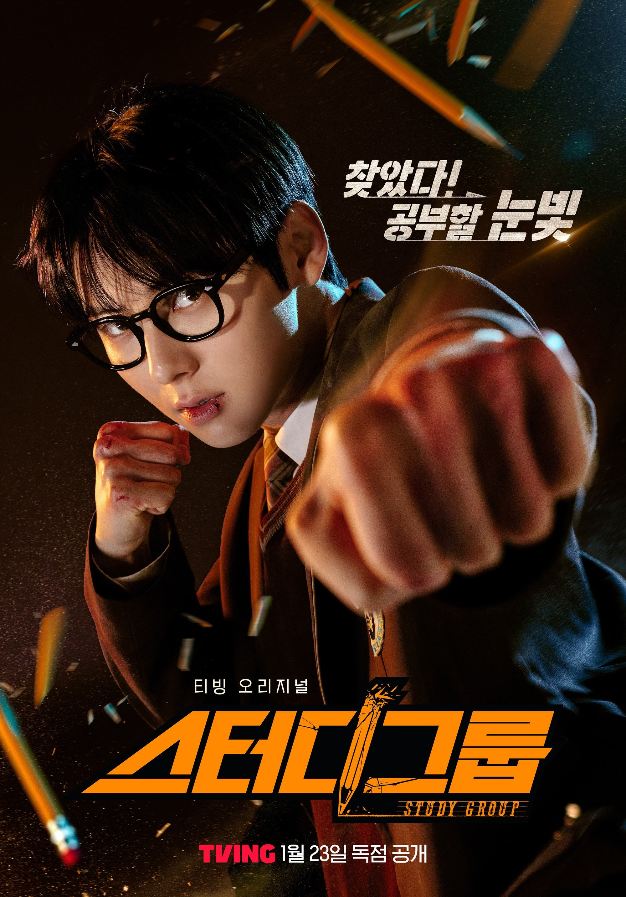

Study Group adalah drama Korea adaptasi webtoon populer. Study Group adalah drama Korea adaptasi dari webtoon populer yang mengangkat realita keras kehidupan di sekolah dengan lingkungan penuh kekerasan, intimidasi, dan siswa bermasalah. Drama ini berfokus pada perjuangan Yoon Ga-Min, seorang siswa yang bercita-cita sederhana namun sulit diwujudkan — belajar dengan sungguh-sungguh dan masuk universitas. Di tengah sekolah yang lebih menghargai kekuatan fisik daripada prestasi akademik, keinginan untuk belajar justru dianggap aneh dan lemah.
Melalui perpaduan aksi laga yang intens, kisah persahabatan yang kuat, dan tema pendidikan yang menyentuh, Study Group menunjukkan bahwa belajar bisa menjadi bentuk perlawanan terhadap sistem dan lingkungan yang tidak mendukung. Drama ini tidak hanya menampilkan pertarungan fisik, tetapi juga perjuangan mental, ketekunan, serta solidaritas antar siswa yang sama-sama ingin mengubah masa depan mereka. Dengan begitu, Study Group menyampaikan pesan bahwa pendidikan, keberanian, dan tekad dapat menjadi senjata untuk melawan kerasnya realitas hidup.
Alur Cerita
Yoon Ga-min adalah seorang siswa di SMK Teknik Yusung yang baru saja masuk, sebuah sekolah menengah kejuruan yang dikenal keras dan penuh dengan siswa bermasalah serta kekerasan. Ia memiliki penampilan seperti siswa teladan—berkacamata, berpakaian rapi, dan berwajah polos—namun berbanding terbalik dengan kondisi akademiknya yang selalu berada di peringkat paling bawah di sekolah. Meskipun bercita-cita untuk masuk universitas dan meraih prestasi akademik, kemampuan belajarnya sangat rendah. Namun, kekurangan tersebut ia tutupi dengan kemampuan bertarung yang luar biasa dan kekuatan fisik yang mengagumkan. Demi mengubah masa depannya, Yoon Ga-min membentuk sebuah kelompok belajar, bersama teman-temannya yang ia temui, dengan harapan bisa meningkatkan nilai dan fokus pada pendidikan.
Sayangnya, niat sederhana itu justru menyeret dirinya dan anggota kelompok belajarnya ke dalam berbagai konflik dengan siswa berandalan dan bahkan organisasi gelap di sekolah. Setiap kali anggota kelompok belajarnya berada dalam masalah, Yoon Ga-Min tanpa ragu berjuang melindungi mereka agar kelompok belajar tersebut tetap bertahan dan terus berjalan.
Poster Drama

Informasi Drama
Judul: Study Group Hangul: 스터디그룹 Director: Lee Jang-Hoon, Yoo Beom-sang Writer: Shin Hyeong-Wook, Yoo Seung-Yeon, Eom Sun-Ho, Oh Bo-hyun Episodes: 10 Durasi: ±50 menit Genre: Laga, Komedi, Remaja, Kedewasaan Produksi: Ylab Plex Network: TVING Rilis: 23 Januari – 20 Februari 2025
Where to watch? Platform resmi seperti Vidio & Viu
Karakter - karakter Protagonis
Yoon Ga-min (윤가민)
Sang karakter utama dalam drama Study Group Yoon Ga-min, dikenal sebagai sosok yang tidak pandai dalam hal akademik. Namun, ia sangat pandai dalam bertarung, ia juga tetap ambisius dalam belajar. Untuk mewujudkan cita-citanya masuk universitas, Ga-min memilih sekolah yang murid-muridnya sering terlibat pertengkaran. Pilihan ini dia buat agar bisa fokus belajar. Sayangnya, justru dia harus berkelahi demi memperjuangkan cita-citanya.
Kim Se-hyun (김세현)
Anggota study group yang jenius dan cerdas, Kim Se-hyun, tetapi sangat lemah dan tidak ahli dalam bela diri namun memiliki nilai tertinggi di angkatannya dan dia mau membantu Ga-min belajar. Meskipun mendapatkan juara, namun orang tuanya memiliki pendapat lain. Orang tua Se-hyun berpikir lebih baik bekerja dibanding belajar. Keadaan seperti itu justru membuat Ga-min semakin semangat mengajak Se-hyun untuk masuk ke kelompok belajarnya.
Lee Ji-woo (이지우)
Siswi anggota study group yang sinis dan berkepribadian keras, namun rendah hati dan benci ketidakadilan. Ji-woo, adalah orang kedua yang bergabung ke kelompok belajar bersama Ga-min dan Kim Se-hyun. Sayangnya dalam perekrutan, mereka Ji-woo terlibat masalah. Hal itu membuat Ga-min ingin menolong Ji-woo agar bisa bergabung serta belajar dengan tenang. Selain memiliki minat belajar, Ji-woo juga ahli dalam seni beda diri yaitu judo.
Chae Hee-won (최희원)
Chae Hee-won ini merupakan teman dekat Ji-woo sekaligus yang mengirimkan surat kalau Ji-woo ingin bergabung dengan kelompok belajar. Chae Hee-won meminta agar Ga-min bisa menyelamatkan Ji-woo yang diancam mengenai saudara kembarnya Ji-woo, Lee Hyun-woo. Setelah permasalahan selesai, Hee-woon juga ikut bergabung dengan kelompok belajar milik Ga-min.
Lee Jun (이준)
Lee Jun yang ini memiliki ketertarikan terhadap juara, berbeda dengan Ga-min yang terobsesi dengan peringkat akademik, Lee Jun justru tertarik dengan peringkat ‘fisik’. Dia selalu mengajak orang lain untuk bertengkar atau beradu fisik, jika dia menang maka peringkatnya akan bertambah. Sayangnya ketika beradu fisik dengan Ga-min, Lee Jun kalah telak. Lee Jun yang menyadari perbedaan dirinya dengan Ga-min memilih bergabung dengan kelompok belajar, agar dia bisa belajar banyak hal dari Ga-min.
Lee Han-gyeong (이한경)
Guru sementara di SMK Teknik Yusung yang bersemangat dan tulus mendukung visi Ga-min untuk membuat kelompok belajar, sekaligus berusaha memperbaiki sekolah tersebut. Awalnya merupakan guru privat Ga Min sebelum Ga Min masuk SMK Teknik Yusung. Uniknya mereka berdua justru bertemu lagi di SMK itu, sebagai guru dan murid lagi. Melihat tekad kuat Ga Min untuk masuk universitas, Lee Han-gyeong membantu Ga-min untuk membuat kelompok belajar. Kelompok belajar tersebut dibuat agar anak-anak yang ingin fokus belajar bisa saling membantu satu sama lain.
Park Geon-yeop (박건엽)
Geon-yeop adalah karakter dengan emosi yang dalam dan kekuatan yang tersembunyi. Kehilangan ibunya karena tragedi misterius membuatnya hidup dalam tekanan dan dendam. Di balik penampilannya yang tenang, Geon-yeop memiliki insting bertarung yang tajam dan keberanian untuk menantang musuh sekuat apa pun. Karakternya tumbuh dari trauma menjadi kekuatan yang sulit dihentikan ketika motivasinya tersulut.
Karakter - karakter Antagonis
Phi Han-wool
Antagonis utama. Pewaris YB Group dan kekuatan dominan di SMK Teknik Yusung. Ia adalah antagonis utama yang mengatur perundungan dan mendominasi sekolah. Han-wool tokoh utama sekaligus antagonis di drama ini. Phi Han-wool tidak hanya terkenal tampan, namun dia juga orang nomor satu di sekolahnya. Bukan tanpa sebab, Han-wool merupakan anak dari pemimpin geng ternama, White Lead, Phi Yeon-baek. Kehadiran Phi Han-wool membuat drama ini semakin seru, terlebih konflik antara dia dan Ga-min.
Ma Min-hwan
Ma Min-hwan hampir selalu terlihat bersama Pi Han-wool di drakor Study Group, ia seperti tangan kanan Pi Han-wool, yang mempunyai aura berbeda. Pi Han-wool berekspresi dingin, sementara Ma Min-hwan sangat angkuh dan tengil.
Lee Hyun-woo
Lee Hyun-qoo dikenal sebagai salah satu siswa pembuat onar di drakor Study Group. Ia tidak niat belajar di sekolah dan banyak berkelahi. Bukan hanya merundung siswa lain, ia bahkan menyerang gurunya sendiri. Lalu terungkap beberapa realitas baru mengenai sisi lain Lee Hyun-woo, ia nyatanya bukan siswa yang nakal akan tetapi kehidupannya dan kakak kembarnya yang sulit membuatnya salah jalan.